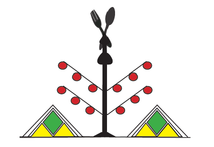

Hey, I'm Lydia...

My name is Lydia Stoutah. I moved to the United States in January 2015 from Algeria, exactly from a region called Kabylie. Some of the things we are famous for are our olive oil,
traditional dresses, berber silver jewelry, and the famous dish Couscous. Berber symboles are traced by inspiration from the acts of life, like the picture on the right represents an olive tree.
I love everything related to my culture especially the jewelry.
The picture bellow is one type of broach that represent home and family.
If you want to see some of the jewelry pieces, please visit my Interests page.
Kabylie is known for its beautiful landscape. We have the Djurdjura Mountains in the south and the Mediterranean Sea in the north.
I am currently installed in Lake Stevens, WA in a quiet neighborhood, and we just love it. I live with my husband and my two boys aged 6 and 4.
Together we love exploring the outside and discovering new kids-friendly trails. We also love traveling and visiting other countries and cities whithin the USA.
In 2019, I joined a daycare center in Lynnwood and worked there full-time for two years.
I loved taking care of little kids and seeing how they were growing, but I could not see myself working in daycare all my life.
That is when I decided to start a new adventure and explore other career jobs. I still work a very part-time job at that daycare, and I call it my day off.
My two boys sure keep me busy, between their Taekwondo classes, swimming classes, and all the birthday parties they are invited to,
it is hard to find time for my hobbies. Oh, wait! I have hobbies? So, yes. When I have little time I like to bake Middle Eastern sweets like Baklava and cookies and pretty much everything.
I also enjoy cooking and learning traditional dishes like Couscous in all its sorts.
My little sous-chef enjoys helping and putting his hands in the dough.